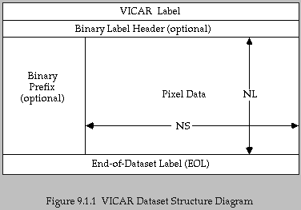

9.1 Dataset Structure 9.2 VICAR Label StructureEXPERT This section expands on two basic concepts introduced in Section 4: datasets and labels. More detailed information on dataset and label structure can be found in The VICAR File Format.
9.1 Dataset Structure
EXPERT The standard structure for VICAR datasets is a
file of fixed-length records which consists of the parts listed
below. Figure 9.1 is a visual representation of the dataset
structure.

EXPERT The pixel data portion of a dataset may contain between 1 and 2.147E9 (2 to the power of 31, minus 1) lines, each of the same length. The maximum length is dependent upon the storage device. Each line is a sequence of pixels whose format is represented by 1, 2, 4 or 8 bytes (Table 4.3.3) and is fixed for a given dataset. In the "picture" interpretation, each line of a dataset represents one raster scan line. The sequence of lines represents the sequence of raster scan lines beginning with line 1 and proceeding down. Multi-dimensional pixel data can be organized in one of three ways: band-sequential (BSQ), band-interleaved by line (BIL) or band-interleaved by pixel (BIP). Additional information on multi-dimensional pixel data organization can be found in the VICAR Run-time Library Reference Manual.
9.2 VICAR Label Structure
EXPERT The VICAR label is an ASCII string containing
free-field items of the form keyword=value (Section 4.4.1) separated by spaces.
EXPERT The VICAR label contains three classes of information. Dataset description ("system") items describe the size, organization, data format, and existence of the optional sections of the dataset. "Property" items describe properties of the image in the image domain, such as the map projection, lookup table, and latitude/longitude information. "History" items describe the history of the pixel data in the dataset, the procs that have processed the pixel data, sometimes their parameters, the user identification, and the processing date and time.
EXPERT System items in the VICAR label include, in order:
LBLSIZE the size of the label in bytes FORMAT the data format of the pixels in the image (byte, half, full, real, doub, or comp; word long, and complex may also be found but are obsolete) TYPE the dataset type (image, param, graph1, graph2 graph3, tabular) BUFSIZ (obsolete, but still required; set it equal to RECSIZE in new files) the internal blocksize VICAR will use during I/O DIM the number of dimensions in the file (always equals 3) EOL end-of-dataset label (if there is an EOL, EOL=1) RECSIZE the size in bytes of each record in the VICAR file ORG data organization: BSQ band sequential BIL band interleaved by line BIP band interleaved by pixel NL number of lines (number of records) NS number of samples (record length) NB number of image bands (number of data planes) N1 equal to NS or NB depending on pixel data organization (ORG - Table 9.2) N2 equal to NL, NS or NB depending on pixel data organization (ORG - Table 9.2) N3 equal to NB or NL depending on pixel data organization (ORG - Table 9.2) N4 not yet used; defaults to 0 NBB number of binary prefix bytes NLB number of binary header records HOST the type of computer used to generate the image (alliant, cray, decstatn, hp-700, mac-aux, mac-mpw, sgi, sun-3, sun-4, tek, vax-vms) INTFMT format used ot represent integer pixels (byte, half, and full) in the file. (low, for vax-vms and decstatn; high for all other except cray, which isn't implemented yet) REALFMT format used to represent floating-point pixels (real, doub, and comp) in the file. (rieee for decstatn; vax for vax-vms; ieee for all others except cray which isn't implemented yet) BHOST type of computer used to generate the binary label. (same values as HOST) BINTFMT format used to represent integers in the binary label (same values as INTFMT) BREALFMT format used to represent floating-point data in the binary label (same values as REALFMT) BLTYPE type of binary label
DIM ORG BSQ BIL BIP N1 NS NS NB N2 NL NB NS N3 NB NL NL Table 9.2 VICAR Data Organization
PROPERTY and end with the first occurrence of the
keyword TASK. A dataset may exclude property labels
entirely. Each property begins with a PROPERTY keyword,
which is the name of the property set. This is followed by the label
items that make up the property. The valid property names, and the
keywords that make up each property, are defined in a name registry
maintained by the VICAR system programmer. EXPERT History items in the VICAR label include:
TASK a proc that has processed the dataset USER user identification (login id.) DAT_TIM processing date and time optional items added by the application proc listed under taskExample: History items added by VICAR
TASK='RESSAR77' USER='USERID' DAT_TIM='Wed Nov 12 19:06:24 1986' PIX_CNT=22259 PARMS='AUTO-STRETCH: 0 to 0 and 138 to 255'EXPERT The contents of a VICAR label may be listed either as formatted ASCII or as an ASCII dump (Appendix 10.12).

If you wish to return to the Contents page, click here.